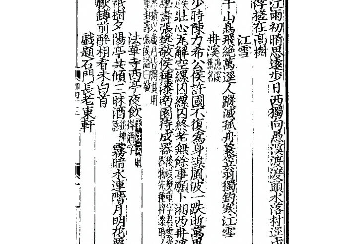

=江雪，柳宗元= 강설, 류종원
=千山鳥飛絶，萬逕人蹤滅。천 산 조 비 절 만 경 인 종 멸=
=孤舟蓑笠翁，獨釣寒江雪。고 주 사 립 옹 독 구 한 강 설=
[[강설, 눈내리는 강
산에는 새 날지 않고,
길에는 사람 흔적 사라졌더라.
외로운 배, 도롱이삿갓 노인,
홀로 눈내리는 겨울강에 낚시 드리운다. (2026.7.19)]]
/// 识典古籍，柳宗元集
所有的山上，飞鸟的身影已经绝迹，所有的道路，都不见人的踪迹。一叶孤舟上，一位身披蓑衣头戴斗笠的老翁，独自在覆盖着白雪的寒冷江面上垂钓。
///
=江雪，柳宗元 jiāng xuě liǔ zōng yuán=
=千山鸟飞绝，万迳人踪灭。qiān shān niǎo fēi jué wàn jìng rén zōng miè=
=孤舟蓑笠翁，独钓寒江雪。gū zhōu suō lì wēng dú diào hán jiāng xuě=
